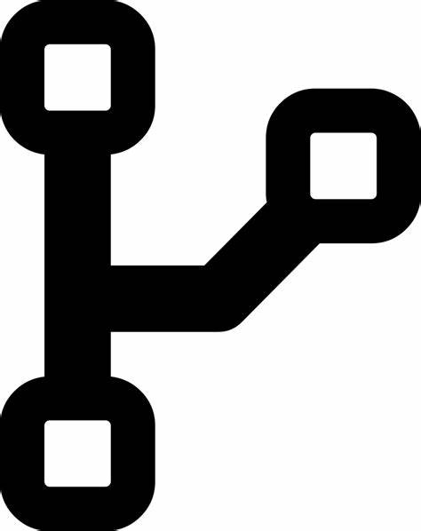
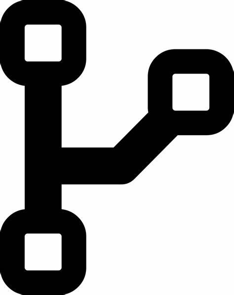
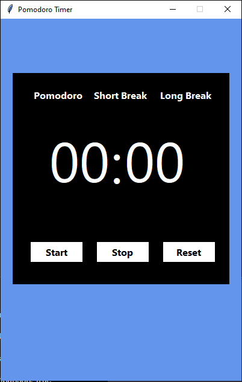
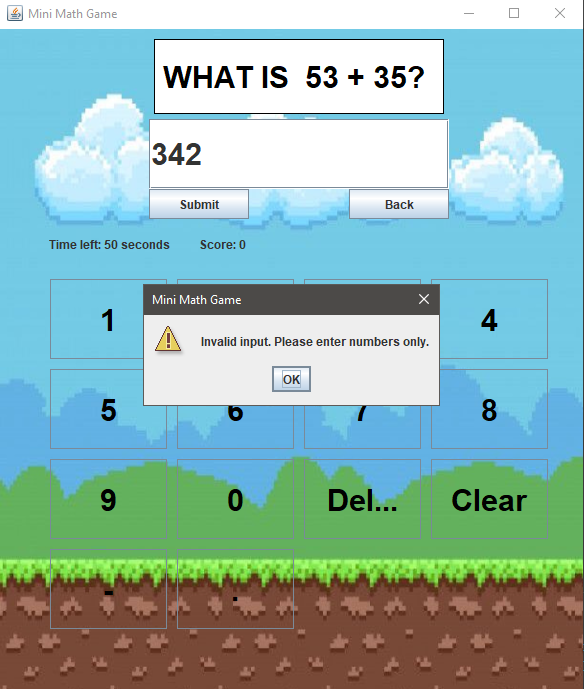
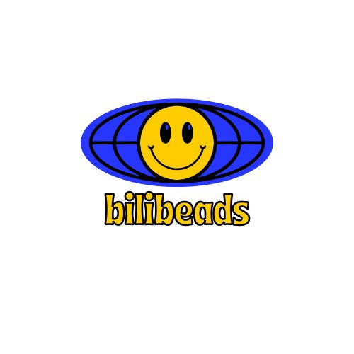
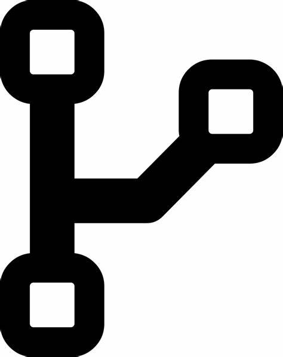

Information Technology Student
Greetings! I am a 2nd-year college student, and I am 20 years old, currently diving into the world of IT industry. I am on a mission to become a great programmer and a great web developer. I am knowledgeable on programming languages such as Python, Java, and Kotlin. I am still exploring other languages and aspiring to make a meaningful impact in the IT industry.
Bachelor of Science in Information Technology: 2nd Year
It was a group work where we brainstormed ideas for something that could be useful and that we could possibly achieve. The Pomodoro Technique focuses on breaking down large tasks into smaller, more manageable ones. Ultimately, it allows you to focus better and spread out your productivity levels throughout the day. Since the Pomodoro Timer performs a specific, relatively limited function, we think it would make a good mini-application.
This is a simple math game that prompts the user to guess the answer to a randomly generated mathematical equation involving addition, subtraction, multiplication, and division. The program uses a Graphical User Interface (GUI) to display the equation and collect the user's answer. The program runs in a loop, allowing the user to play multiple rounds of the game. After the user submits their answer, the program checks whether it is correct and provides feedback to the user indicating whether their answer was correct or incorrect.
Bilibeads: Fashion Accessories is an application for people who like bead accessories. Bilibeads is designed to cater to the vibrant world of bead products. Bilibeads will be a comprehensive platform where users can explore, purchase, create, and customize a wide range of bead-based products and craft ideas.

